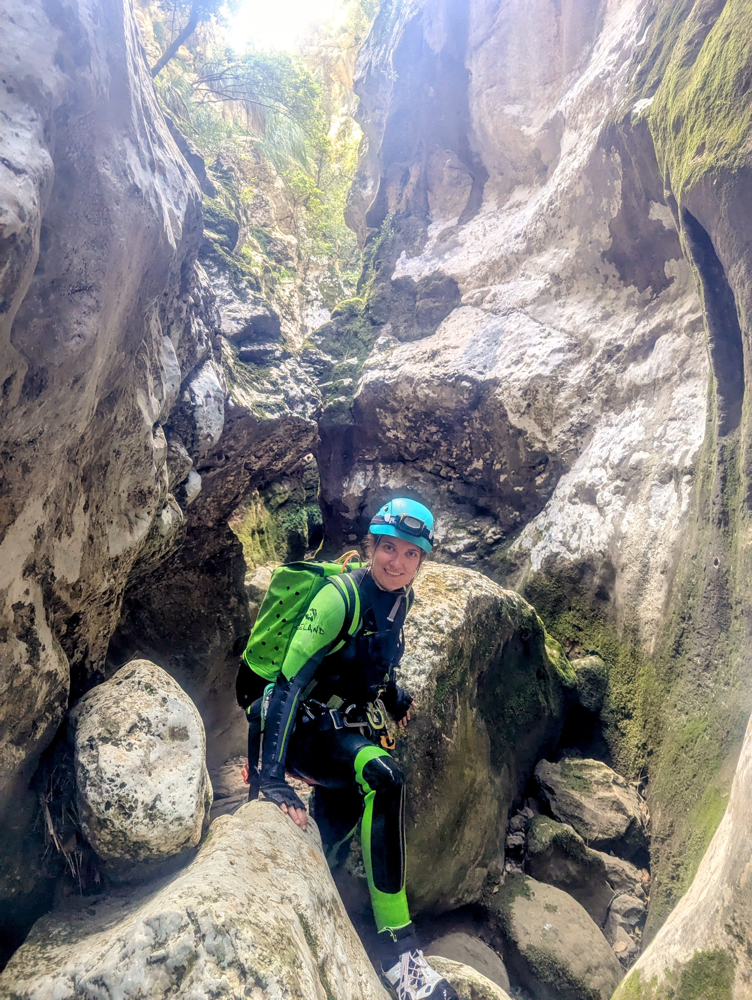
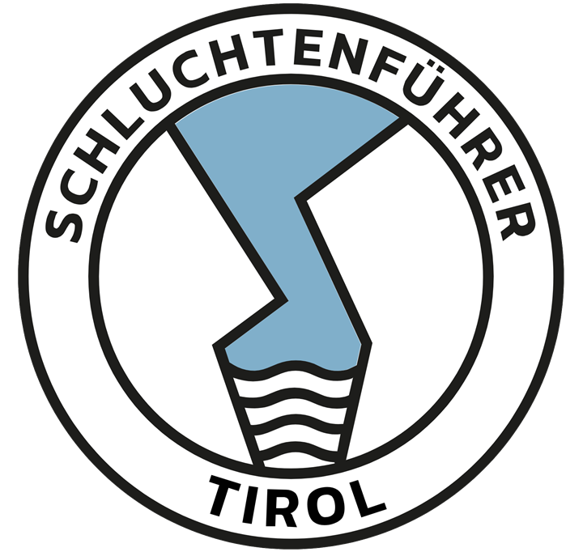
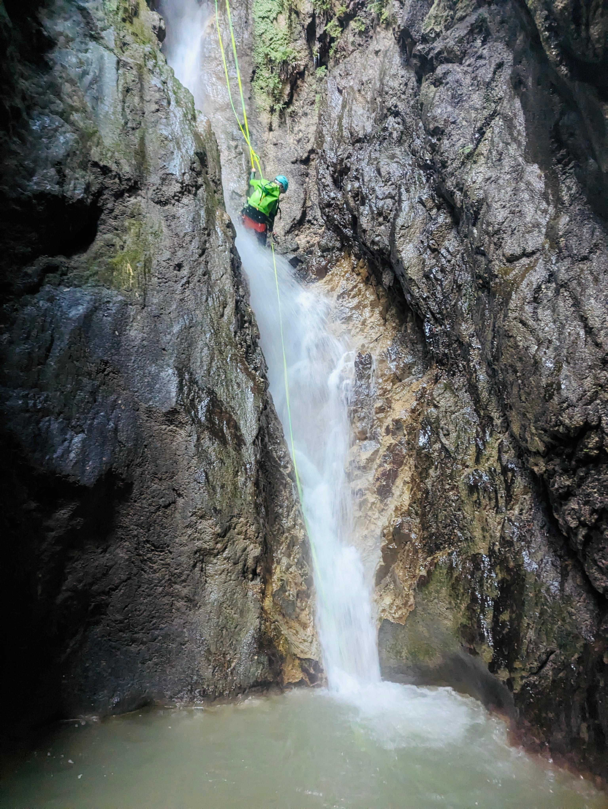
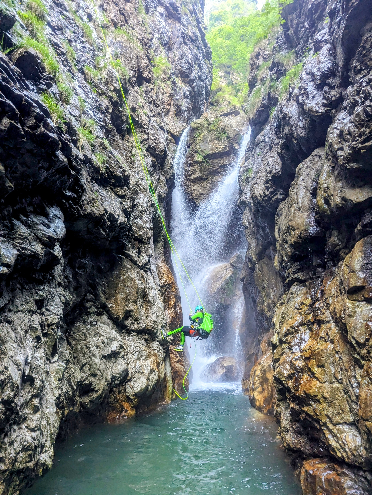
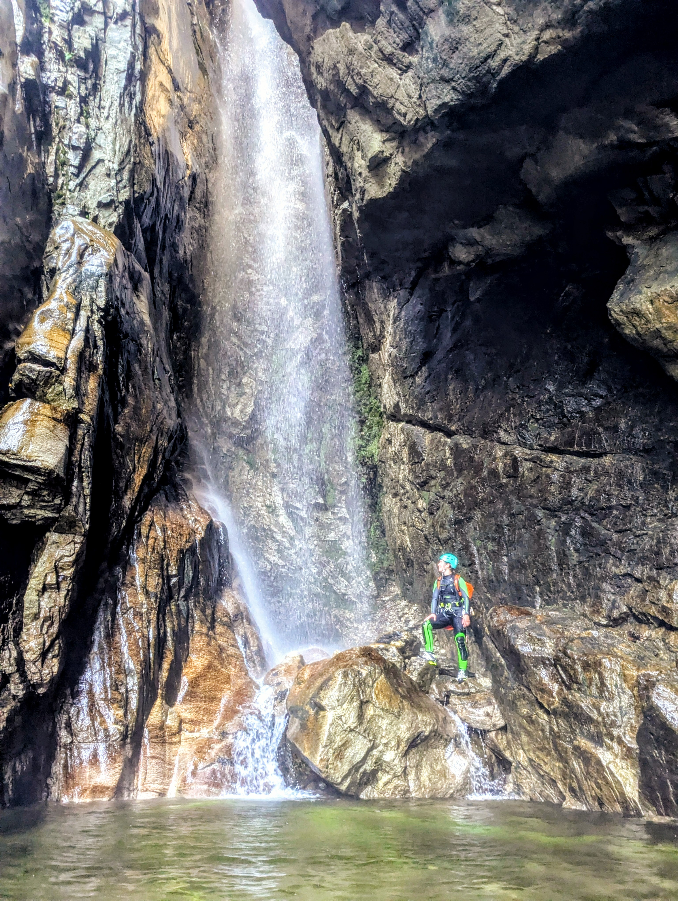

Private Canyoning Touren
Ruhig geführte Touren für Einzelpersonen, Paare oder kleine Gruppen mit Fokus auf Qualität, Sicherheit und stimmige Auswahl.
Private Touren, Projektbegleitung, ruhige Professionalität
Für kleine private Gruppen, Unternehmen, Camps und bestehende Anbieter, die im Allgäu, in Vorarlberg, im Tessin oder projektbezogen in Europa eine verlässliche Schluchtenführerin suchen.


Über Tanja
Tanja arbeitet selbstständig und begleitet Touren mit einer Haltung, die Sicherheit nicht als Marketingbegriff versteht, sondern als Grundlage jeder guten Entscheidung in der Schlucht. Planung, Briefing, Materialeinsatz und Tempo greifen bei ihr sauber ineinander.
Sie ist vor allem dann die richtige Partnerin, wenn nicht Lautstärke zählt, sondern Verlässlichkeit: bei privaten Touren mit kleiner Gruppe, bei Einsätzen für bestehende Anbieter oder bei Camps und Projekten, in denen Struktur, Kommunikation und lokales Verständnis wichtig sind.

Leistungen
Das Angebot ist bewusst flexibel aufgebaut: für private Gäste, für kleine Teams und für Unternehmen, die eine professionelle externe Guiding-Kompetenz brauchen.
Ruhig geführte Touren für Einzelpersonen, Paare oder kleine Gruppen mit Fokus auf Qualität, Sicherheit und stimmige Auswahl.
Abstimmung von Region, Saison, Bedingungen und Anspruchsniveau, statt Standardprogramm unabhängig von Wetter und Gruppe.
Touren mit sauberem Briefing, klarer Anleitung und Tempo, das Vertrauen aufbaut, ohne die Gruppe zu überfordern.
Begleitung für Gäste oder Teams mit Erfahrung, wenn Route, Ablauf und Sicherheitsmanagement professionell geplant werden müssen.
Unterstützung für Anbieter, Camps, Veranstalter und bestehende Strukturen, die verlässliche Guiding-Kapazität benötigen.
Von der ruhigen Halbtagestour bis zur projektbezogenen Zusammenarbeit: Umfang und Intensität richten sich nach dem tatsächlichen Bedarf.
Gebiete & Regionen
Tanja arbeitet mit Blick auf Verhältnisse, Saisonfenster und passende Zielgruppen. Die Schwerpunkte liegen in diesen Regionen.
Für private Touren, Tagesprogramme und Einsätze mit Nähe zu Süddeutschland.
Naheliegende alpine Möglichkeiten mit kurzen Wegen und gut planbaren Formaten.
Klassische Canyoning-Landschaften für hochwertige Erlebnisse mit entsprechend sorgfältiger Planung.
Projektbezogene Einsätze für Camps, Veranstalter und Teams, wenn zusätzliche professionelle Begleitung gefragt ist.
Private Touren & Guiding für Unternehmen
Die Website spricht bewusst Unternehmen, Camps und bestehende Anbieter zuerst an. Gleichzeitig sollen sich auch private Gäste gut aufgehoben fühlen, wenn sie eine persönliche, professionelle Begleitung statt Massenbetrieb suchen.
Wenn zusätzliche Guiding-Kapazität, regionale Unterstützung oder eine ruhige operative Verstärkung gebraucht wird, bringt Tanja Struktur, Sicherheitsbewusstsein und klare Kommunikation in bestehende Abläufe ein.
Wer eine private Canyoning Tour im kleinen Rahmen sucht, bekommt keine austauschbare Standardinszenierung, sondern eine Tour, die zu Erfahrung, Zielen und Tagesbedingungen passt.

Sicherheit, Professionalität, Qualifikation
Tanja plant Touren entlang der realen Bedingungen: Wasserstand, Gruppe, Zielsetzung, Material, Tagesform und Alternativen. Genau daraus entsteht das ruhige Gefühl, dass eine Tour professionell geführt ist.
Für eine erste fachliche Einordnung genügt eine kurze E-Mail mit Region, Terminfenster und Erfahrungsstand.
Galerie
Die Auswahl bleibt bewusst kompakt und zeigt Führung, Wasser, Fels und Bewegung ohne überladene Inszenierung.





Kontakt
Keine Formulare, keine Umwege. Einfach direkt an Tanja schreiben, mit ein paar Stichpunkten zu Region, Zeitraum, Gruppengröße oder Einsatzart.